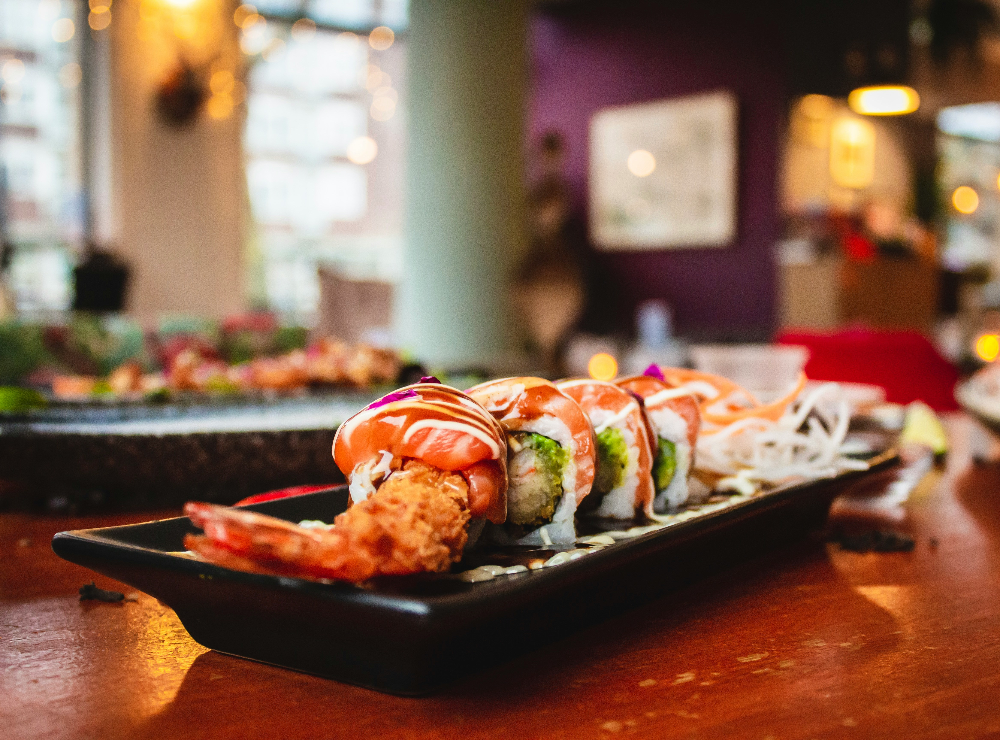

Wasabi shrimp sushi cups are bite-sized, deconstructed sushi served in muffin tins. They are easy to make at home without the hassle of rolling. Typically, they feature a base of seasoned sushi rice and seaweed (nori), topped with cooked shrimp, creamy wasabi aioli, and fresh vegetables
These wasabi shrimp sushi cups are perfect for you if rolling sushi is not in your wheelhouse. Certainly filling a muffin cup is! Prepare sushi rice according to the package instructions, but do not fluff—the success of this dish depends on very sticky rice. Use a silicone muffin pan, if you have one. While the rice cooks, prepare the filling ingredients.
Step 2
Place about 1/8 cup cooked and cooled rice in each of 8 silicone muffin cups. Press rice firmly into the cup, using damp fingertips. Shape some of the rice up the sides of the cup. Refrigerate at least 20 minutes.
Step 3
To serve, fill rice cups with matchstick carrots, matchstick cucumbers, and edamame. Place one shrimp half on top of each filled cup.
Step 4
Snip the tip off 1 corner of wasabi aioli bag, and squeeze contents across the top of each filled cup. Sprinkle with black sesame seeds. Serve immediately with pickled ginger.